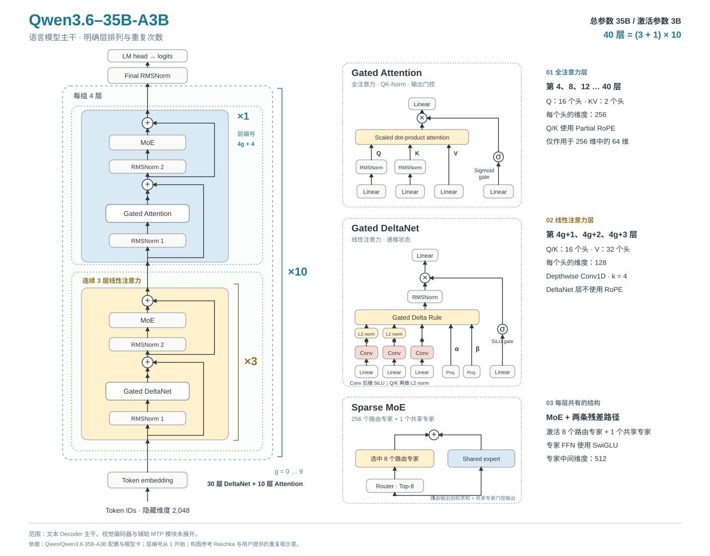
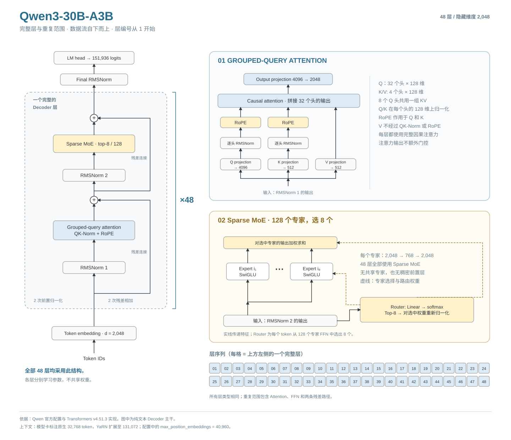
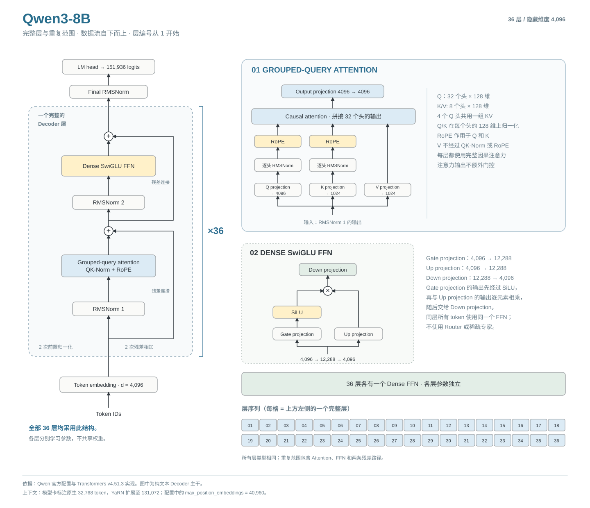
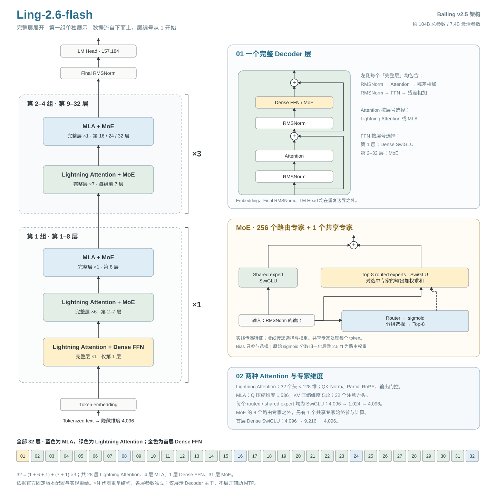

MODEL ARCHITECTURES
模型架构
从一张结构图开始，读懂模型的层排列、注意力与专家网络。
4 个模型 · 可缩放图解 · 矢量图下载

01 / HYBRID ATTENTION + MOE
Qwen3.6-35B-A3B
将 40 层展开为「DeltaNet ×3 + Attention ×1」的十个重复组，逐层查看归一化、残差连接和 MoE。
查看架构图
02 / GQA + SPARSE MOE
Qwen3-30B-A3B
48 个完整 Decoder 层，展开 QK-Norm、RoPE 与两条残差连接；每层从 128 个专家中选出 8 个，明确路由与加权汇总。
查看架构图
03 / GQA + DENSE FFN
Qwen3-8B
36 个完整 Decoder 层，展示 32 个 Q 头如何共享 8 组 KV，以及稠密 SwiGLU 中的 Gate projection、Up projection 和 Down projection。
查看架构图
04 / LIGHTNING ATTENTION + MLA + MOE
Ling-2.6-flash
Bailing v2.5 架构：32 层按 7:1 混合 Lightning Attention 与 MLA，单独画出首层 Dense FFN；后续三组用 ×3 明确表示。
查看架构图